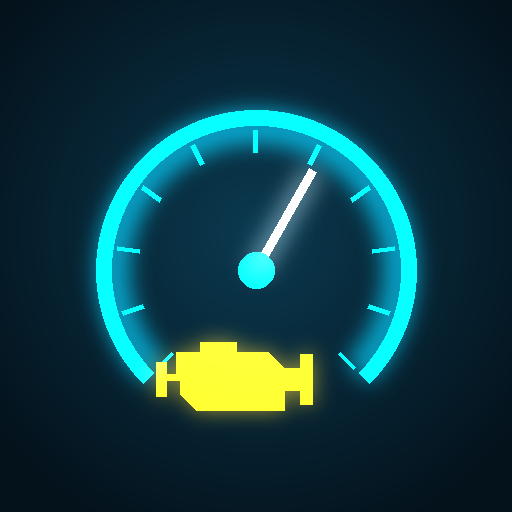
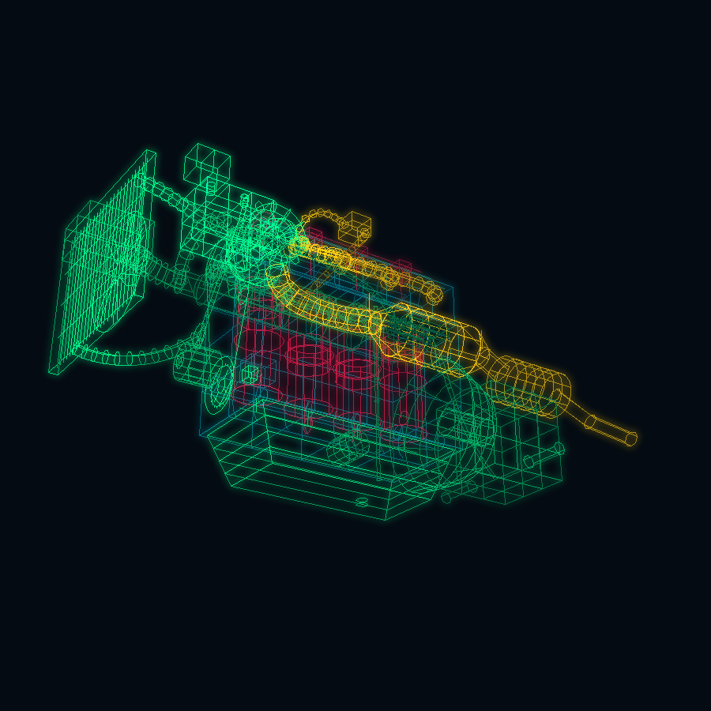

Spia motore accesa?
Scopri il guasto dal telefono con EOBD2 Holo. Gratis su Android.
▶ Scarica gratis da Google Play
- Motore 3D olografico: le parti con problemi si colorano di rosso
- Codici errore spiegati in parole semplici, con cosa fare
- Cancellazione codici e cruscotto in tempo reale
- Tagliandi, scadenze e assistenza con un tocco
Serve una chiavetta OBD2 ELM327 Bluetooth o Wi-Fi e un telefono Android 8.0 o superiore.
▶ Scarica gratis